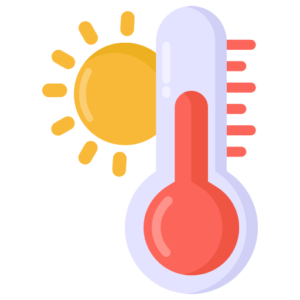

Turin
{{ weatherData.current.temperature_2m }}{{weatherData.current_units.temperature_2m}}
 min
min
{{weatherData.daily.temperature_2m_min[0]}}{{weatherData.current_units.temperature_2m}}

max
{{weatherData.daily.temperature_2m_max[0]}}{{weatherData.current_units.temperature_2m}}
 humidity
humidity
{{weatherData.current.relative_humidity_2m}}{{weatherData.current_units.relative_humidity_2m}}
 wind
wind
{{weatherData.current.wind_speed_10m}} {{weatherData.current_units.wind_speed_10m}}